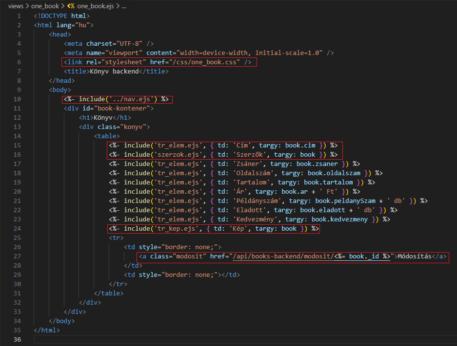
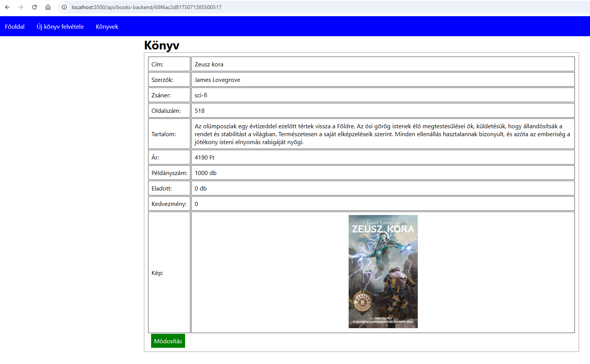
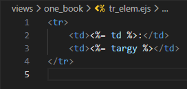
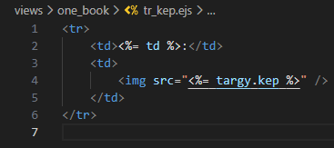
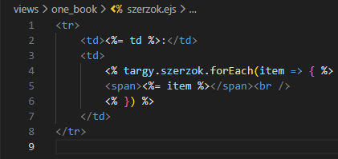
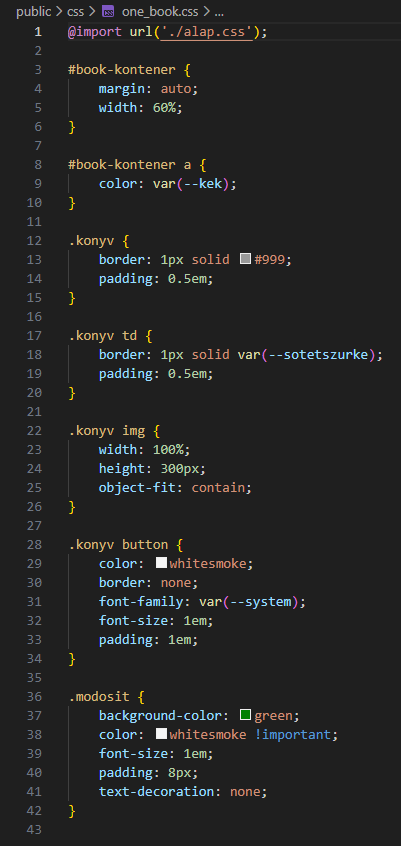

Egy könyv kezelése - one_Book.ejs
Egy könyv kezelése - one_Book.ejs

Ebben a részben szerkesztjük az views/one_book mappában az összes könyv megjelenítéséhez szükséges ejs állományokat.
-
Szerkesszük az
one_book.ejsállományt. és-
<link rel="stylesheet" href="/css/one_book.css" />- mivel aserver.mjsállományban beállítottuk a hivatkozást apublicmappára, ezért minden elemére ilyen speciálisan tudunk hivatkozni. -
<%- include('../nav.ejs') %>- beimportálása anav.ejsállománynak. -
<%- include('tr_elem.ejs', { td: 'Cím', targy: book.cim }) %>- beimportálása atr_elem.ejsállománynak, ahol átadjuk a{ td: 'Cím', targy: book.cim }objektumot. -
<%- include('tr_kep.ejs', { td: 'Kép', targy: book }) %>- beimportálása atr_kep.ejsállománynak, ahol átadjuk a{ td: 'Kép', targy: book }objektumot. -
<%- include('szerzok.ejs', { td: 'Szerzők', targy: book }) %>- beimportálása aszerzok.ejsállománynak, ahol átadjuk a{ td: 'Szerzők', targy: book }objektumot. -
<a class="modosit" href="/api/books-backend/modosit<%= book._id %>">Módosítás</a>- elemenkénti lekérése a könyveknek.
-
-
Szerkesszük a
tr_elem.ejséstr_kep.ejsállományokat. és-
<td><%= td %>:</td>- aone_book.ejs-től kapott objektumból kivesszük atdértéket. -
<img src="<%= targy.kep %>" />- aone_book.ejs-től kapott objektumból kivesszük aztargy.kepértéket.
-
-
Szerkesszük a
szerzok.ejsállományt.-
targy.szerzok- aone_book.ejs-től kapott objektumból kivesszük atargy.szerzokértéket.
-
-
Szerkesszük az
one_book.cssállományt.